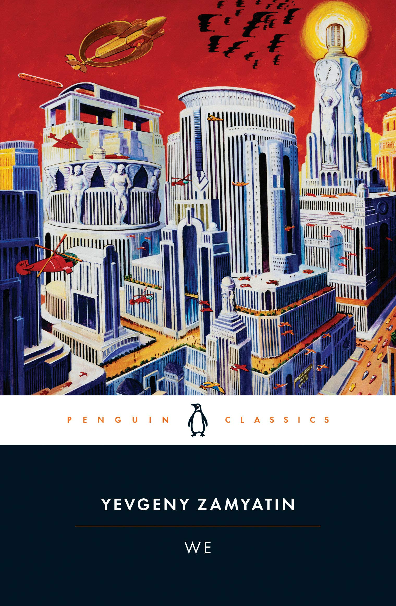

Works
Most Notable Work
We
We (Russian: Мы, romanized: My) is a dystopian novel, written 1920–1921. It was first published as an English translation in 1924 in New York, with the original Russian text first published in 1954 and its first publication in the Soviet Union only in 1988, thanks to glasnost'.
The novel describes a world of harmony and conformity within a united totalitarian state. It influenced the emergence of dystopia as a literary genre.